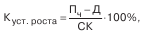
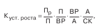
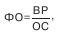
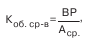

| Деловая активность коммерческой организации проявляется в динамичности ее развития, достижении ею поставленных целей, что отражают натуральные и стоимостные показатели, в эффективном использовании экономического потенциала, расширении рынков сбыта продукции. Количественная оценка и анализ деловой активности производятся по двум направлениям: • степень выполнения плана по основным показателям, обеспечение заданных темпов их роста; • уровень эффективности использования ресурсов коммерческой организации. Наиболее информативные аналитические выводы формулируются в результате сопоставления темпов изменения основных показателей. Оптимальным считается следующее соотношение таких темповых показателей: 100 % < Tc где Тс, Трп, Tп соответственно – темп изменения совокупного капитала, авансированного в деятельность коммерческой организации, объема реализации и прибыли. Первое неравенство означает, что экономический потенциал коммерческой организации возрастает; второе – по сравнению с увеличением экономического потенциала, объем реализации возрастает более высокими темпами; из третьего неравенства следует, что прибыль возрастает опережающими темпами. Для характеристики деловой активности акционерных компаний также используют коэффициент устойчивости экономического роста:  где П4 – чистая прибыль (доступная к распределению между владельцами организации); Д – дивиденды, выплаченные акционерам; СК – собственный капитал. Куст. роста – показывает, какими темпами в среднем увеличивается собственный капитал за счет финансово-хозяйственной деятельности, а не за счет привлечения дополнительного акционерного капитала, или какими, в среднем, темпами может развиваться коммерческая организация в дальнейшем, не меняя сложившиеся соотношения между различными источниками финансирования, фондоотдачей, рентабельностью производства, дивидендной политикой и т. д. Связь коэффициента Куст. роста с этими показателями может быть описана жестко детерминированной факторной моделью:  где Пр – чистая прибыль, реинвестируемая в развитие; ВР – выручка от реализации; А – стоимостная оценка совокупных активов предприятия. Экономическая интерпретация: • первый фактор модели характеризует дивидендную политику в коммерческой организации, выражающуюся в выборе экономически целесообразного соотношения между выплачиваемыми дивидендами и аккумулируемой частью прибыли; • второй фактор характеризует рентабельность продаж; • третий фактор отражает ресурсоотдачу; • четвертый фактор (коэффициент финансовой зависимости) характеризует соотношение между заемными и собственными источниками средств. Основными оценочными показателями в рамках оценки деловой активности как уровня эффективности использования ресурсов коммерческой организации являются показатели ресурсоотдачи. Так, показатель эффективности использования основных фондов (фондоотдача) рассчитывается по формуле  где ОС – средняя стоимость основных средств. Этот коэффициент показывает, сколько рублей выручки от реализации приходится на один рубль вложений в основные средства. Эффективность использования трудовых ресурсов обычно характеризуется показателями производительности труда, характеризующими объем производства (в стоимостном измерении), приходящийся на одного работника. Эффективность использования финансовых ресурсов рассматривается в рамках управления оборотными активами: рассчитываются оборачиваемость производственных запасов и средств в расчетах, продолжительность операционного и финансового циклов и другие показатели. Обобщающим показателем оценки эффективности использования ресурсов предприятия является показатель ресурсоотдачи (коэффициент оборачиваемости средств в активах), рассчитываемым по формуле  где Аср – средняя стоимость активов. Этот показатель характеризует объем реализованной продукции, приходящейся на рубль средств, вложенных в деятельность предприятия. |